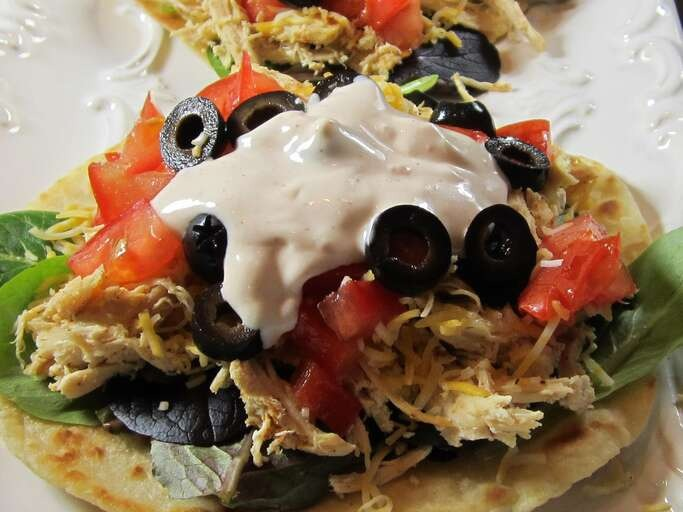

Ranch Chicken Tacos

Description
These ranch chicken tacos are a great change from regular Mexican-style tacos. A quick,
cool summer dinner made with leftover rotisserie chicken. Naturally, you can use any type
of chicken cooked the way you like; just be sure to shred it for real tacos.
Ingredients
- Ranch dressing
- Reduced-fat sour cream
- Taco seasoning mix
- Chunky salsa
- Rotisserie chicken
- Corn tortillas
- Shredded lettuce
- Tomatoes
- Onions
- Black olives
- Avocados
- Colby-Monterrey Jack cheese
Preparation
- Prepare the dressing: Combine ranch dressing, sour cream, 1 teaspoon
taco seasoning, and salsa in a small bowl. Cover and refrigerate until serving.
- Mix the chicken in: Toss chicken with remaining taco seasoning.
Cover bowl loosely with wax paper or plastic wrap. Microwave chicken until chicken is
heated through, about 2 to 3 minutes.
- Make your tacos: Warm tortillas in a skillet for about a minute on
each side to make them pliable. Place a scoop of chicken on the tortilla and top with
lettuce, tomato, green onion, olives, avocado, cheese, and a spoonful of the ranch
dressing mixture.